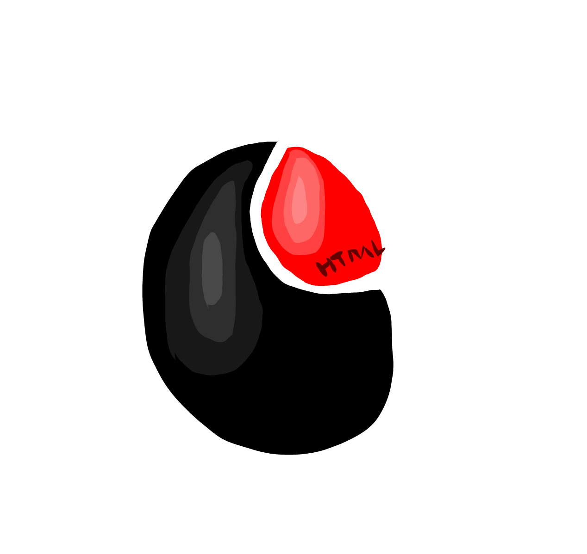

Arsitektur Semantik HTML5
30 Modul komprehensif penulisan data struktural internet berstandar W3C.

30 Modul komprehensif penulisan data struktural internet berstandar W3C.
30 Modul rekayasa antarmuka, tata letak multi-dimensi, dan bervariasi.
30 Modul eksekusi logika, manajemen runtime memori, dan penanganan data asinkronus.